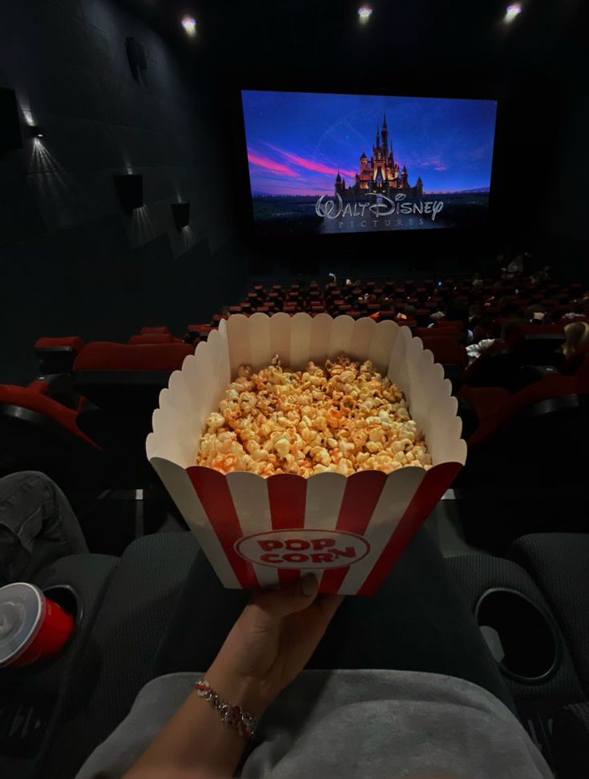
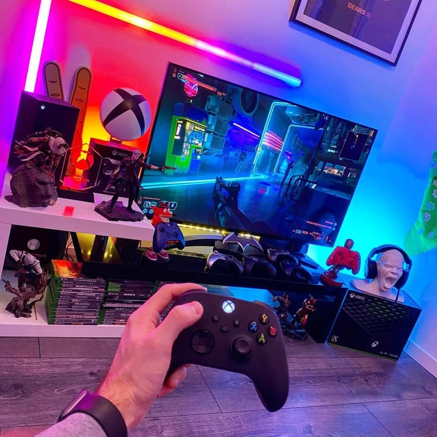

Multimedia
La multimedia integra texto, imagen, audio, video, animacion e interactividad en un solo sistema para comunicar informacion de forma mas atractiva, clara y efectiva.
T
✦
♪
Medios
conectados
conectados
Componentes
Elementos Multimedia
Cada recurso aporta una forma distinta de comunicar: algunos explican, otros muestran, otros suenan y otros activan movimiento.
Imagen
Video
Audio
Animacion
Bases
Pilares de la multimedia
-
Uso simultaneo de varios medios para presentar la informacion.
-
Interactividad para que el usuario pueda intervenir o decidir.
-
Enfoque comunicativo para transmitir mejor el mensaje.
-
Adaptabilidad a educacion, ocio, publicidad o investigacion.
-
Accesibilidad digital mediante internet y dispositivos tecnologicos.
Clasificacion
Tipos de multimedia

Lineal
El usuario no controla el flujo; observa el contenido en un orden definido, como una pelicula o un video.

No lineal
El usuario decide el orden y ritmo de la informacion, como en un sitio web, videojuego o enciclopedia digital.
Hipermedia
Los elementos se conectan por enlaces, permitiendo saltar entre imagenes, textos, videos o espacios digitales.